Plastic Constitutive Model¶
The plastic constitutive model is an implementation of plasticity model with a von Mises type yield function that supports both isotropic and kinematic hardening.
User Input¶
Invocation¶
The plastic constitutive model is invoked in the material leg of the input file by
constitutive model plastic
| Name | Aliases |
|---|---|
| plastic | elastic plastic, von mises |
Registered Parameters¶
| Symbol | Input Name | Description |
|---|---|---|
 |
LAM | First Lame constant |
 |
G | Elastic shear modulus |
 |
E | Young’s modulus |
| 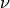 | NU | Poisson’s ratio |
 |
K | Elastic bulk modulus |
| 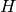 | H | Constrained modulus |
 |
KO | SIGy/SIGx in uniaxial strain |
| 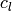 | CL | Longitudinal wave speed |
| 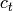 | CT | shear (transverse) wave speed |
 |
C0 | bulk/plastic wave speed |
 |
CR | Thin rod wave speed |
 |
RHO | Density |
| 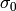 | Y | Initial yield stress |
 |
A | Kinematic hardening parameter |
 |
C | Isotropic hardening parameter |
 |
M | Isotropic hardening parameter |
Note
The plastic model uses only the bulk and shear moduli, but any two of the above elastic moduli, or two wave speeds plus the density, can be specified in the input deck, from which the bulk and shear moduli will be computed.
Plotable Output¶
| Symbol | Plot Key | Description |
|---|---|---|
| 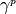 | GAM | Distortional plastic strain |
| 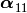 | BSTRESS11 | 11 component of back stress |
| 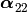 | BSTRESS22 | 22 component of back stress |
| 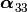 | BSTRESS33 | 33 component of back stress |
| 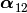 | BSTRESS12 | 12 component of back stress |
| 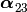 | BSTRESS23 | 23 component of back stress |
| 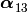 | BSTRESS13 | 13 component of back stress |
Options¶
| Option | Description |
|---|---|
| fortran | Use the fortran implementation of the plastic model |
Background¶
Elastic Response¶
The rate of stress is given by
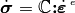
where 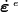 is the elastic part of the strain rate. The the total strain rate is assumed to be the sum of elastic and plastic parts
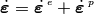
The plastic strain rate is expressed as the product of its magnitude 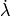 and direction 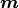
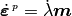
giving for the stress increment
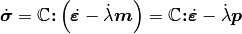
where 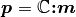 is the return direction.
Plastic Flow¶
The boundary between elastically obtainable stress states and states unobtainable through inviscid processes is termed the yield surface. Mathematically, the yield surface is expressed in terms of a stress and internal variable dependent yield function 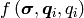, where 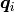 and 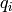 represent the contribution of all individual tensor and scalar internal state variables (ISVs) that change only with plastic loading, respectively. The yield criterion is the statement that 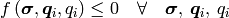. The material is said to be yielded if for a trial elastic stress 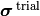, computed assuming the entire step is elastic, the yield criterion is violated, or 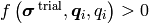. In this case, the material “flows” plastically such that the yield criterion is satisfied. It can be shown that the yield criterion will be satisfied if the consistency condition is met. The consistency condition is the statement that
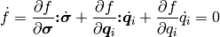
Assuming that the internal variables change only during plastic loading, allows evolutionary type of equations of the form
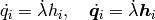
Substituting the evolution equation for the internal state variables and the governing equation for the elastic stress increment, the consistency condition becomes
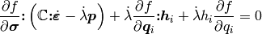
from which
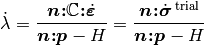
where 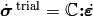 is the trial elastic stress increment, 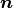 is the unit normal to the yield surface and is the ensemble hardening modulus, given by
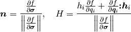
Yield Function and Evolution Equations¶
The plastic material’s yield function is a combined kinematic/isotropic hardening von Mises (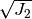) type yield function, given by
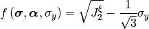
where 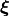 is the stress tensor relative to the back stress ,
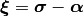
The yield stress 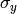 is given by the following empirical hardening power law
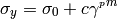
where , and are constants and
is the distortional plastic strain, defined as
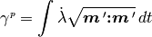
Taking the rate of the yield stress, and substituting 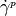, allows the yield stress rate to be written as
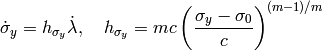
The back stress evolves according to
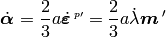
which allows the ISV modulus associated with the back stress to be expressed as
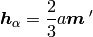
The derivatives of the yield function with respect to stress, back stress, and yield stress are given by
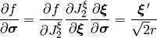
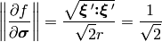
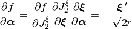
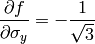
where the radius 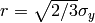.
Combining the above results, and assuming an associative flow rule 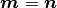, the magnitude of the plastic strain rate is
Numerical Implementation¶
Presuming an isotropic stiffness with constant bulk and shear moduli, first order integration of the governing equations gives
where
and and are the bulk and shear moduli,
respectively. Using the above results we get
and finally,
where